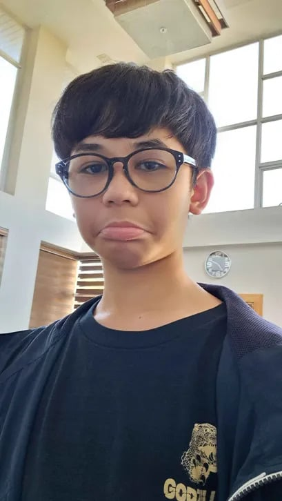

-WELCOME TO THE PAGE OF-
E C C O
the one and only >:)
Howdy! The name's Ethan Claudio C. Oliva, but please, just call me Ecco!
I'm currently 13 years old (but that doesn't stop me >:]), about to turn 14 this year since my birthday is May 29, 2011.
I LOVE DRAWING. I am an artist. I'm also a game developer, roblox game developer (it makes me suffer). I'm also trying out music composing, it's not the greatest, but atleast I tried.
My personality? I'm not so sure myself to be honest... I would say that I'm very ambiverted and only acts bubbly when I talk to the people im comfortable with. Sometimes I say things I don't think about before saying, and it's something I need to fix, some of what I say includes tang guli guli wata. I like to act dumb as comedic factor, but it doesn't really work and only really pisses off people, specifically that one guy, yet I still do it :>.
My favorites? I like video game soundtracks, electric guitar and drums, artworks, indie shows/animated stuff, and other stuff that I can't say.
WHAT DO YOU LOOK LIKE?

What do I look like? I guess I can show a picture. This is what I look like. Not so impressive is it? Yeah well I don't really care. Like it or not, that's me. ...Dang I could really use some moisterizer...
ANY MUSIC YOU LISTEN TO?
I will give it to you, but as a choice. One of these buttons are tampered with! Think carefully, or something funny will happen.
--CHOOSE WISELY--
that's pretty much it... uhm... bye~